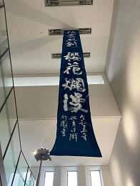
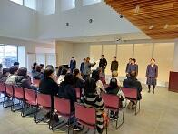
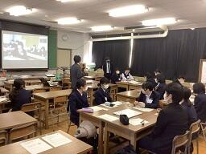
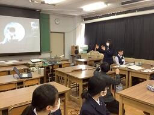
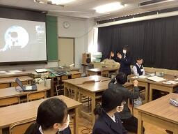
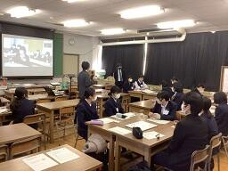
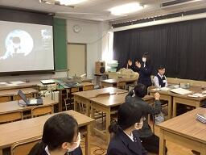

文字
背景
行間


SSH活動掲示板
2023年3月の記事一覧
 SAKURA Art&Learning 3days
SAKURA Art&Learning 3days
投稿日時 : 2023/03/29
 SSH担当
SSH担当
佐倉市の「夢咲くら館」のオープニング企画として佐倉高校の「SAKURA Art&Learning 3days」を開催しました。
「夢咲くら館」とは、この3月に佐倉市で新しくオープンした図書館やカフェなどの複合施設のことです。
3月24日(金)から26日(日)にかけて3日間の企画で、
伝統となっているSAKURA Artと佐倉高校に根付いた探究学習をコラボレーションしました。
参加団体は
Art展 美術部・書道部・工芸部・華道部・写真部
イベント 音楽部・吹奏楽部・ダンス同好会
課題研究発表 普通科4班 理数科20班 (企画ポスターに発表テーマ記載)
でした。
また、課題研究発表ポスター展示では、佐原高校・成東高校・市立銚子高校も参加しました。
このようなコラボ＋4校合同の開催は初めての試みでしたが、
どの団体も数ヶ月準備を重ね、充実した3日間となりました。
悪天候の中での開催となりましたが、ご来場いただいたみなさま、ありがとうございました。
でした。
また、課題研究発表ポスター展示では、佐原高校・成東高校・市立銚子高校も参加しました。
このようなコラボ＋4校合同の開催は初めての試みでしたが、
どの団体も数ヶ月準備を重ね、充実した3日間となりました。
悪天候の中での開催となりましたが、ご来場いただいたみなさま、ありがとうございました。
 


 


この企画のポスターは以下のリンクからご覧ください。
SAKUR Art & Learning 3days
 SSH通信No.15
SSH通信No.15
SSH通信No.15を発行しました。
内容は第20回高校生・高専生科学技術チャレンジ、
第25回数理科学コンクール、第22回日本情報オリンピックについてです。
下の画像をクリックすると見ることができます。
ぜひご覧ください。
過去のSSH通信一覧は以下のリンクからご覧ください。
SSH通信No.15
 令和4年度研究開発実施報告書
令和4年度研究開発実施報告書
本校SSH事業の令和4年度研究開発実施報告書を発行しました。
以下の画像をクリックすると報告書を見ることができます。
今年度の報告書作成にあたり、情報提供をしていただいた方々、SSH講座を開講していただいた先生方、
その他ご協力をいただいたたくさんの方々に感謝いたします。
ありがとうございました。
来年度はSSH第Ⅱ期5年目となりますので、引き続きご協力をよろしくお願いいたします。
これまでの研究開発実施報告書は以下のリンクからご覧ください。
令和4年度研究開発実施報告書.pdf
 佐倉アクティブ「月開発会議へようこそ」
佐倉アクティブ「月開発会議へようこそ」
3月16日(木)放課後に佐倉アクティブ「月開発会議へようこそ」が開講されました。
参加したのは1・2学年の普通科15名、理数科1名の計16名です。
講師の方が全体の司会・進行を行い、それぞれのグループの意見に対して、
科学的に、文化的に、様々な視点から意見を出し合って、活発な議論が起こりました。
最初の段階で月開発に肯定的な生徒も、否定的な生徒もいましたが、
議論後の個々の意見まとめでは、他の生徒の説得力のあるプレゼンに影響されて変化しているものも多々ありました。

 

日本科学未来館のプログラムの詳細は以下のリンクからご覧ください。
https://www.miraikan.jst.go.jp/resources/provision/SpaceExploration/
参加したのは1・2学年の普通科15名、理数科1名の計16名です。
日本科学未来館の遠隔授業プログラムとして、科学コミュニケーターの方が講師を務めるワークショップ
「月開発会議へようこそ ～あなたの選択が未来をつくる」を開講しました。
内容は、世界が月、火星を目指しているなかで、日本はどのように月探査・開発を進めていくべきか、
生徒たちは宇宙政策委員会の委員という設定で、政策ごとに４つのグループに分かれて考え、
２０４０年までに進めるべき日本の宇宙政策をグループで議論し、今後の日本の宇宙政策書を作成するというものでした。
講師の方が全体の司会・進行を行い、それぞれのグループの意見に対して、
科学的に、文化的に、様々な視点から意見を出し合って、活発な議論が起こりました。
最初の段階で月開発に肯定的な生徒も、否定的な生徒もいましたが、
議論後の個々の意見まとめでは、他の生徒の説得力のあるプレゼンに影響されて変化しているものも多々ありました。

日本科学未来館のプログラムの詳細は以下のリンクからご覧ください。
https://www.miraikan.jst.go.jp/resources/provision/SpaceExploration/
 SSH通信No.14
SSH通信No.14
SSH通信No.14を発行しました。
内容は令和4年度佐倉高校課題研究発表会と佐倉高校SSH課題研究発表会についてです。
下の画像をクリックすると見ることができます。
ぜひご覧ください。
過去のSSH通信一覧は以下のリンクからご覧ください。
SSH通信No.14
日本金属学会ポスターセッション(オンライン)
3月15日(水)午後、日本金属学会のオンラインポスターセッションに参加しました。
日本金属学会では最新の研究成果を発表・討議する場として年２回講演大会を開催しており、
その中で若い学生に金属や材料学分野に対して興味を持ってもらうためにポスターセッションを実施しています。
予めweb上にアップしたポスターを見てもらい、
大学教授や企業の研究者などの専門家にzoomに入っていただいて直接発表を聴いてもらって
質疑応答が受けられる貴重な機会となっています。
今回参加したのは2年理数科の5グループ8名です。
発表した研究のテーマは
「ヤブガラシの反旋点の生成過程について」(写真①)
「断熱材の構造による防音効果の変化」(写真②)
「改良型パイクリートの考案と作製」(写真③)
「中心に集まるお茶の葉」(写真④)
「紙から作る箸」(写真⑤)
です。
↑写真① ↑写真②

↑写真③ ↑写真④

↑写真⑤
日本金属学会では最新の研究成果を発表・討議する場として年２回講演大会を開催しており、
その中で若い学生に金属や材料学分野に対して興味を持ってもらうためにポスターセッションを実施しています。
予めweb上にアップしたポスターを見てもらい、
大学教授や企業の研究者などの専門家にzoomに入っていただいて直接発表を聴いてもらって
質疑応答が受けられる貴重な機会となっています。
今回参加したのは2年理数科の5グループ8名です。
発表した研究のテーマは
「ヤブガラシの反旋点の生成過程について」(写真①)
「断熱材の構造による防音効果の変化」(写真②)
「改良型パイクリートの考案と作製」(写真③)
「中心に集まるお茶の葉」(写真④)
「紙から作る箸」(写真⑤)
です。
↑写真① ↑写真②
↑写真③ ↑写真④
↑写真⑤
JSEC2022(第20回高校生・高専生科学技術チャレンジ)2名受賞
投稿日時 : 2023/03/14
SSH担当
本校生徒の研究作品がJSEC2022(第20回高校生・高専生科学技術チャレンジ)で2名受賞しました。
JSEC2022(第20 回高校生・高専生科学技術チャレンジ)とは、
全国の高校生と、高等専門学校生を対象に、2003年に始まった科学技術の自由研究コンテストです。
幅広い分野から研究作品を募り、専門家による書類審査とプレゼンテーション審査があります。
科学研究について研究成果を検証するだけでなく、研究者の知的好奇心や課題解決能力、
実験・調査の過程における工夫、チームワークやプレゼンテーションスキルなどを総合的に評価するのが特長です。
今年は全国から339件の研究作品の応募があり、予備審査(書類審査)を経て100研究作品が一次審査に進出し、
JSEC2022(第20 回高校生・高専生科学技術チャレンジ)の詳細は以下のリンクからご覧ください。
https://manabu.asahi.com/jsec/
JSEC2022(第20 回高校生・高専生科学技術チャレンジ)とは、
全国の高校生と、高等専門学校生を対象に、2003年に始まった科学技術の自由研究コンテストです。
幅広い分野から研究作品を募り、専門家による書類審査とプレゼンテーション審査があります。
科学研究について研究成果を検証するだけでなく、研究者の知的好奇心や課題解決能力、
実験・調査の過程における工夫、チームワークやプレゼンテーションスキルなどを総合的に評価するのが特長です。
今年は全国から339件の研究作品の応募があり、予備審査(書類審査)を経て100研究作品が一次審査に進出し、
さらに一次審査会議の結果、30研究作品が12月10日(土)、11日(日)の最終審査会に出場しました。
本校からは蜷川千里さんが一次審査へ進出、鳴戸崚一郎くんが最終審査へ進出し、
鳴戸崚一郎くんが優秀賞を受賞、蜷川千里さんが入選
しました。
研究テーマは
鳴戸くんが「鉛直下向きの流水の衝突時に見られる縞模様の研究」
蜷川さんが「赤金だけじゃない!!銅赤ガラスの世界-金の代用と新しい着色方法の提案-」
です。
鳴戸崚一郎くんが優秀賞を受賞、蜷川千里さんが入選
しました。
研究テーマは
鳴戸くんが「鉛直下向きの流水の衝突時に見られる縞模様の研究」
蜷川さんが「赤金だけじゃない!!銅赤ガラスの世界-金の代用と新しい着色方法の提案-」
です。
JSEC2022(第20 回高校生・高専生科学技術チャレンジ)の詳細は以下のリンクからご覧ください。
https://manabu.asahi.com/jsec/
第25回数理科学コンクール3名受賞
投稿日時 : 2023/03/06
SSH担当
第25回数理科学コンクールで本校生徒3名が受賞しました。
数理科学コンクールとは、千葉大学先進科学センター主催で
水の惑星にどんな波が起こるか？丈夫な家に柱は何本必要か？など、
以前は千葉大学を会場として開催されていて、グループ対抗で
実験器具や書籍がたくさん用意されている規模の大きいコンクールでしたが、
コロナ禍の影響で、自宅に実験キットが送られてきて2日間かけて各自実験し、分析・考察する形式でした。
コンクールの受賞者一覧は以下のリンクからご覧ください。
https://www.cfs.chiba-u.ac.jp/events/math/2022/20230301.html
また、コンクールの詳細については以下のリンクからご覧ください。
https://www.cfs.chiba-u.ac.jp/events/math/index.html
数理科学コンクールとは、千葉大学先進科学センター主催で
水の惑星にどんな波が起こるか？丈夫な家に柱は何本必要か？など、
現象を物理や数学を使って解明するコンクールです。
実験や模型作りで試すなど、自由な発想で楽しみながら挑戦していきます。
11月26日(土)～27日(日)に開催され、エントリーしたのは普通科・理数科合わせて15名です。
実験や模型作りで試すなど、自由な発想で楽しみながら挑戦していきます。
11月26日(土)～27日(日)に開催され、エントリーしたのは普通科・理数科合わせて15名です。
以前は千葉大学を会場として開催されていて、グループ対抗で
実験器具や書籍がたくさん用意されている規模の大きいコンクールでしたが、
コロナ禍の影響で、自宅に実験キットが送られてきて2日間かけて各自実験し、分析・考察する形式でした。
受賞結果は3月1日(水)に発表され、本校からは
中村颯人くんが金欅賞、吉澤汀子さんと北村涼太くんが銀欅賞
を受賞しました。
中村颯人くんが金欅賞、吉澤汀子さんと北村涼太くんが銀欅賞
を受賞しました。
内容としては
第1問「漁網や洗濯ネットなど、四角形と六角形の網目の違いを数学的に考察」で吉澤さん、
第3問「ラスベガスの全面ガラス張りのピラミッド型高層カジノホテルの効率的な窓拭きを力学的に考察」で中村くん、
第4問「宇宙ステーション内で静止状態から動いて、同位置後ろ向きに静止する方法」で中村くんと北村くん
が評価され、受賞になりました。
コンクールの受賞者一覧は以下のリンクからご覧ください。
https://www.cfs.chiba-u.ac.jp/events/math/2022/20230301.html
https://www.cfs.chiba-u.ac.jp/events/math/index.html